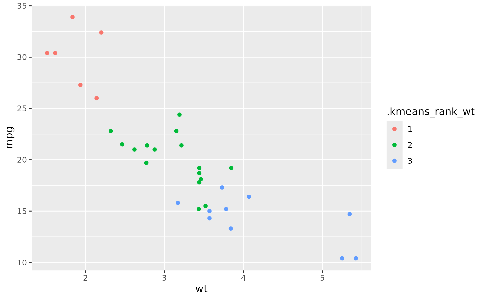
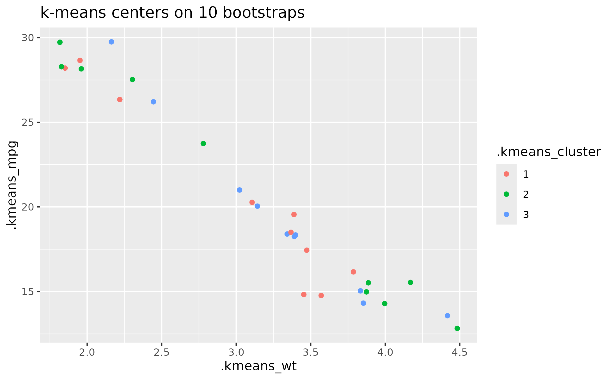
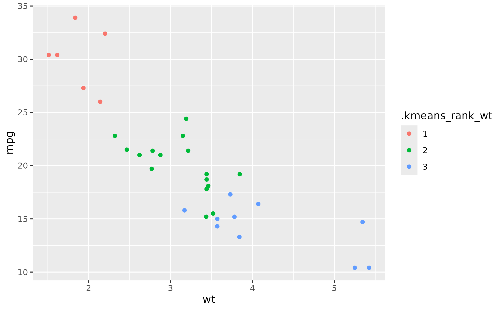
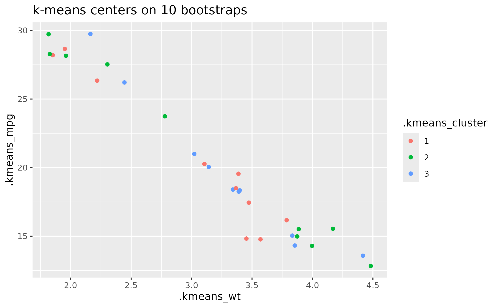

Observations are scale()-ed before clustering.
Usage
fit_kmeans(data, k, vars, args_kmeans = list())Arguments
- data
a dataframe
- k
number of clusters to create
- vars
variable selection for clustering. Select multiple variables with
c(), e.g.,c(x, y). The selection supports tidyselect semantics tidyselect::select_helpers, e.g.,c(x, starts_with("mean_").- args_kmeans
additional arguments passed to
stats::kmeans().
Value
the original data but augmented with additional columns for
clustering details. including .kmeans_cluster (cluster number of each
observation, as a factor) and .kmeans_k (selected number of clusters).
Cluster-level information is also included. For example, suppose that
we cluster using the variable x. Then the output will have a
column .kmeans_x giving the cluster mean for x and
.kmeans_rank_x giving the cluster labels reordered using the cluster
means for x. The column .kmeans_sort contains the cluster sorted
using the first principal component of the scaled variables. All columns
of cluster indices are a factor() so that they can be plotted as
discrete variables.
Details
Note that each variable is scaled() before clustering
and then cluster means are unscaled to match the original data scale.
This function provides the original kmeans labels as .kmeans_cluster but
other alternative labeling based on different sortings of the data. These are
provided in order to deal with label-swapping in Bayesian models. See
bootstrapping example below.
Examples
data_kmeans <- fit_kmeans(mtcars, 3, c(mpg, wt, hp))
library(ggplot2)
ggplot(data_kmeans) +
aes(x = wt, y = mpg) +
geom_point(aes(color = .kmeans_cluster))
 ggplot(data_kmeans) +
aes(x = wt, y = mpg) +
geom_point(aes(color = .kmeans_rank_wt))

# Example of label swapping
set.seed(123)
data_boots <- lapply(
1:10,
function(x) {
rows <- sample(seq_len(nrow(mtcars)), replace = TRUE)
data <- mtcars[rows, ]
data$.bootstrap <- x
data
}
) |>
lapply(fit_kmeans, k = 3, c(mpg, wt, hp)) |>
dplyr::bind_rows() |>
dplyr::select(.bootstrap, dplyr::starts_with(".kmeans_")) |>
dplyr::distinct()
# Clusters start off in random locations and move to center, so the labels
# differ between model runs and across bootstraps.
ggplot(data_boots) +
aes(x = .kmeans_wt, y = .kmeans_mpg) +
geom_point(aes(color = .kmeans_cluster)) +
labs(title = "k-means centers on 10 bootstraps")

# Labels sorted using first principal component
# so the labels are more consistent.
ggplot(data_boots) +
aes(x = .kmeans_wt, y = .kmeans_mpg) +
geom_point(aes(color = .kmeans_sort)) +
labs(title = "k-means centers on 10 bootstraps")
ggplot(data_kmeans) +
aes(x = wt, y = mpg) +
geom_point(aes(color = .kmeans_rank_wt))

# Example of label swapping
set.seed(123)
data_boots <- lapply(
1:10,
function(x) {
rows <- sample(seq_len(nrow(mtcars)), replace = TRUE)
data <- mtcars[rows, ]
data$.bootstrap <- x
data
}
) |>
lapply(fit_kmeans, k = 3, c(mpg, wt, hp)) |>
dplyr::bind_rows() |>
dplyr::select(.bootstrap, dplyr::starts_with(".kmeans_")) |>
dplyr::distinct()
# Clusters start off in random locations and move to center, so the labels
# differ between model runs and across bootstraps.
ggplot(data_boots) +
aes(x = .kmeans_wt, y = .kmeans_mpg) +
geom_point(aes(color = .kmeans_cluster)) +
labs(title = "k-means centers on 10 bootstraps")

# Labels sorted using first principal component
# so the labels are more consistent.
ggplot(data_boots) +
aes(x = .kmeans_wt, y = .kmeans_mpg) +
geom_point(aes(color = .kmeans_sort)) +
labs(title = "k-means centers on 10 bootstraps")